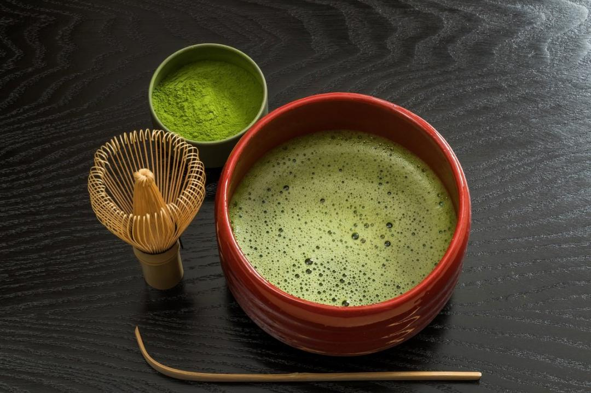

抹茶
茶葉在栽培過程和玉露一樣需要覆蓋以阻絕陽光的照射，也是決定抹茶品質的關鍵。
製作上，將摘下的茶葉蒸青並乾燥後， 去除茶莖再碾碎成粉末，便成為大家常見的抹茶了，是各色甜點界的熱門常客。
日本的傳統茶道所用的茶，便是以抹茶為主， 除了能沖泡直接喝，在料理、和菓子、蛋糕中也很常使用。

最常見的一種日本茶，使用新鮮摘取的茶葉新芽蒸製而成，略帶苦澀的味道但保有新芽的清爽香氣是它的特徵。
煎茶又分為普通煎茶和深蒸煎茶，以蒸炒茶葉的時間來作區分， 一般稱的煎茶指的即是以標準時間蒸製新鮮茶葉的淺蒸煎茶，而「深蒸煎茶」則是比普通煎茶的蒸製時間長上2到3倍。
後者由於蒸製時間較長，形狀變得較細碎，可抑制茶的苦澀，使味道變得較濃厚滑順。

日本茶中的高級品，製作方法與煎茶相同，但玉露茶在嫩芽採收前須先經過約20天的覆蓋，阻隔陽光直接照射，減少了苦澀味道，增加其甘甜與清香。
玉露擁有獨特的海苔般的香氣，茶色明亮翠綠，含有豐富的兒茶酚和胺基酸。沖泡玉露需使用較低的水溫，才不會讓茶水產生澀味。